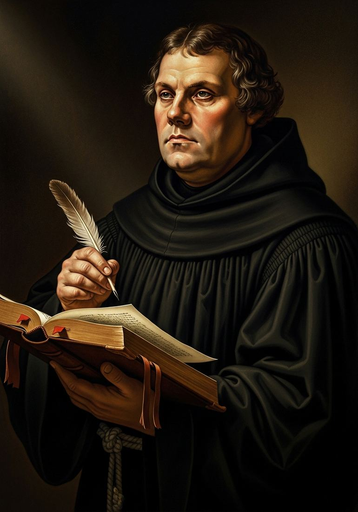
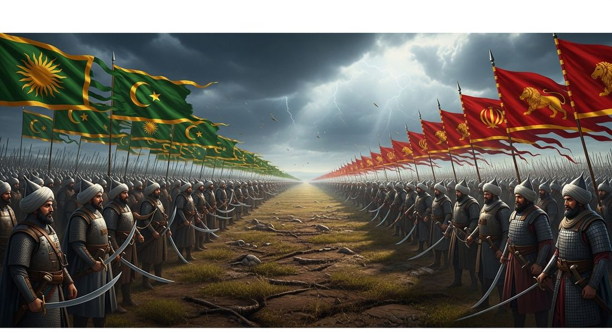
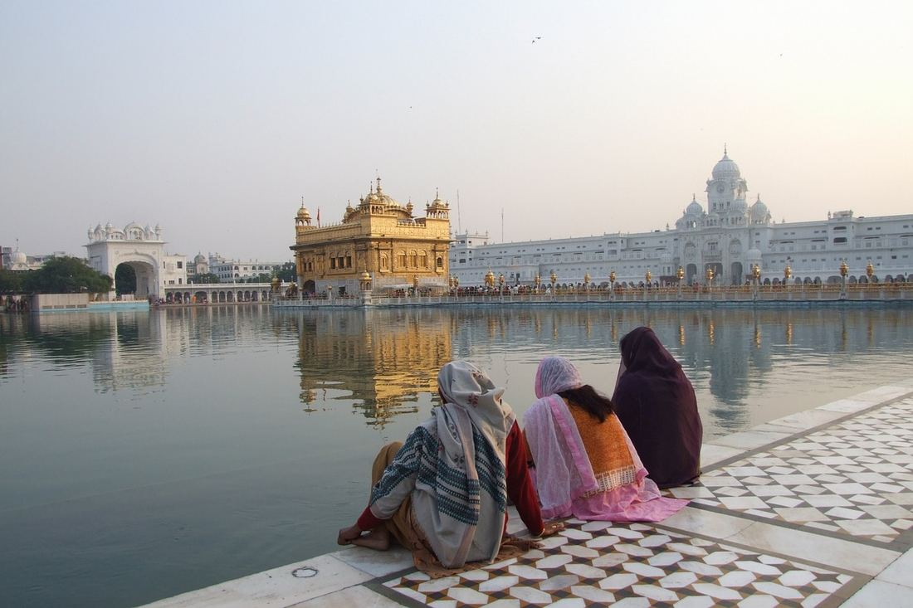

3.3 Empires: Belief Systems
- LO-A: Protestant Reformation — In 1517, German monk Martin Luther published his 95 Theses challenging the Catholic Church's sale of indulgences. The printing press spread his ideas across Europe faster than the Church could respond. The result: Western Christianity permanently split into Catholic and Protestant branches; a century of religious wars followed; and the Catholic Church reformed itself in response (Counter-Reformation). Catholic Counter-Reformation —: The Council of Trent (1545–1563) reformed Church practices, clarified doctrine, and launched the Jesuit order as an intellectual and missionary force. The Counter-Reformation successfully recovered parts of Europe for Catholicism and drove Catholic missionary expansion into the Americas, Asia, and Africa.
- LO-B: Understand the Protestant Reformation, the Sunni-Shi'a split's intensification,… — Sunni-Shi'a split deepened —: The Ottoman-Safavid conflict transformed the Sunni-Shi'a religious divide from a theological dispute into a geopolitical fault line. The Safavids forcibly converted Persia to Twelver Shi'a Islam; the Ottomans positioned themselves as defenders of Sunni Islam. Their wars defined the religious map of the Middle East for centuries. Sikhism emerges —: In 15th-century Punjab, where Hindu and Muslim cultures met and often clashed, Guru Nanak (1469–1539) developed a new religious teaching emphasizing the oneness of God, rejection of caste hierarchy, and the equality of all people regardless of religion. The Sikh community (Panth) developed through ten Gurus into a distinct religion with its own scriptures, practices, and identity.
Try each question before revealing the answer.
1. The Catholic Church had faced criticism and internal reform movements for centuries before 1517 — earlier reformers like Jan Hus (1369–1415) had raised similar complaints to Luther. Why did Luther's Reformation succeed where earlier movements had failed?
2. If you were a peasant in rural Germany in 1520, why might Luther's teaching that Christians can read and interpret the Bible for themselves (the "priesthood of all believers") be theologically and socially radical?
3. The Ottoman-Safavid conflict was driven by both territorial and religious rivalry. Why might religious difference make a territorial rivalry more intense and difficult to resolve through compromise?
4. Guru Nanak, founder of Sikhism, was born in Punjab in an area where Hinduism and Islam had coexisted and interacted for centuries. How might this specific cultural environment have shaped the religious ideas he developed?
5. The Catholic Counter-Reformation is often described as both a response to Protestantism and an independently-driven reform of the Church. What does this tell us about how to think about causation — can a reaction to an external threat also be genuinely internally motivated?
- Explain continuity and change within various belief systems during the period from 1450 to 1750 Understand the Protestant Reformation, the Sunni-Shi'a split's intensification, and the development of Sikhism as specific examples of religious change in this period
Tap a term for its definition.
-
Definition: A 16th-century religious movement beginning with Martin Luther's 95 Theses (1517) that challenged Catholic Church authority, doctrine, and practices, ultimately producing lasting splits in Western Christianity into Catholic and Protestant denominations. Significance: One of the most consequential events in European history; produced over a century of religious wars; drove the Catholic Counter-Reformation; transformed European political structure (religious wars led to the Peace of Westphalia 1648 and the concept of state sovereignty); enabled global missionary expansion by both Catholic and Protestant churches.
-
Definition: German Augustinian monk and theology professor (1483–1546) who published 95 Theses in 1517 challenging the Catholic practice of selling indulgences, triggering the Protestant Reformation. Significance: Argued for salvation by faith alone ( sola fide ), Scripture alone ( sola scriptura ), and the "priesthood of all believers" — doctrines that eliminated the need for priestly mediation and challenged Church institutional authority; protected by German princes who saw religious and political advantage in supporting him.
-
Definition: In Catholic teaching, certificates that reduced time in purgatory for the buyer or their deceased relatives; by the early 16th century, the Church was actively selling them to fund construction projects (including St. Peter's Basilica in Rome). Significance: The immediate trigger for Luther's 95 Theses; symbolized broader corruption of Church practices; Luther's objection was both financial (Church profiting from fear) and theological (the idea that sin's consequences could be purchased contradicted his understanding of grace and faith).
-
Definition: The Catholic Church's response to Protestantism, including the Council of Trent (1545–1563), the founding of the Jesuit order, the Roman Inquisition, and internal reforms of clerical education and practice. Significance: Successfully recovered parts of central Europe from Protestantism; launched the Jesuit order, which became the most effective Catholic missionary force worldwide; clarified Catholic doctrine in ways that made it more internally coherent; strengthened the papacy's institutional authority.
-
Definition: The division within Islam between Sunni Muslims (who follow the first four caliphs as legitimate successors to Muhammad) and Shi'a Muslims (who believe Ali, Muhammad's cousin and son-in-law, should have been the first successor). Significance: Began in the 7th century over succession disputes; intensified in the 16th century when the Safavid Empire made Shi'a Islam its state religion, creating a territorial boundary between Sunni and Shi'a populations; the Ottoman-Safavid wars of 1514–1639 turned this religious division into a geopolitical fault line.
-
Definition: The largest branch of Shi'a Islam, believing in a line of twelve Imams descended from Ali as the legitimate leaders of the Muslim community; the Twelfth Imam is believed to be in occultation (hidden) and will return as the Mahdi (messianic figure) at the end of times. Significance: Made the state religion of the Safavid Empire (Persia/Iran) in 1501; Iran remains the world's largest Twelver Shi'a majority nation; the Shi'a clerical establishment in Iran developed a distinctive political theology that has shaped modern Iranian politics.
-
Definition: A monotheistic religion founded in 15th-century Punjab by Guru Nanak (1469–1539), teaching the oneness of God ( Waheguru ), rejection of caste hierarchy, equality of all people, and service to others ( seva ). Significance: Developed through ten Gurus; the tenth Guru, Gobind Singh, established the Khalsa (community of initiated Sikhs) and compiled the Guru Granth Sahib (holy scripture); now one of the world's major religions with approximately 25–30 million adherents; exemplifies a new religion emerging from cross-cultural religious interaction.
-
Definition: The founder of Sikhism (1469–1539), born in the Punjab region of present-day Pakistan, who preached the unity of God, the equality of all humans regardless of caste or religion, and a path of devotion, honest living, and service. Significance: His travels across South Asia, the Middle East, and Central Asia spread his teachings broadly; his compositions are included in the Guru Granth Sahib (Sikh scripture); his teaching explicitly incorporated elements from both Hindu Bhakti devotion and Sufi Islamic mysticism while establishing a distinct tradition.
The Protestant Reformation: Christianity Divided

Martin Luther (1483–1546), Augustinian monk and professor of theology whose 95 Theses (1517) challenged the Catholic Church's sale of indulgences — and whose writings, spread by the printing press, permanently fractured Western Christianity. Image credit not specified.
In 1517, a 33-year-old German monk named Martin Luther nailed a document to the door of the Castle Church in Wittenberg — or, more likely, simply mailed it to his bishop. The 95 Theses challenged the Catholic Church's practice of selling indulgences — certificates that supposedly reduced time in purgatory for the buyer or their deceased family members. The Church was selling them aggressively to fund the construction of St. Peter's Basilica in Rome.
Luther's argument was both financial and theological. Financially: the Church was profiting from people's fear of hell. Theologically: the whole idea of purchasing forgiveness contradicted his reading of Paul's letters in the New Testament, which taught that salvation came through faith alone (sola fide), not through purchasing certificates or performing acts of penance. If Luther was right, the Church's entire sacramental system — and the power of priests to mediate salvation — was built on a theological error.
The printing press transformed what might have been another internal Church dispute into a continent-wide crisis. Within weeks, the 95 Theses had been printed and distributed across Germany. Within months, the debate had engaged the greatest minds in Europe. The Church called Luther to recant; he refused, famously declaring at the Diet of Worms (1521): "Here I stand; I cannot do otherwise."
Lutheran teaching rested on three core principles that fundamentally challenged the Church's authority:
- Sola fide (Faith alone): Salvation is by faith in God's grace, not earned through good works, sacraments, or purchases. This eliminated the theological basis for indulgences, pilgrimages, and much of the Church's intermediary role.
- Sola scriptura (Scripture alone): The Bible is the sole authority for Christian teaching — not Church tradition, papal decrees, or councils. This required every Christian to be able to read Scripture, driving Luther to translate the Bible into German.
- Priesthood of all believers: Every Christian has direct access to God; no specially ordained priest is necessary as intermediary. This flattened the hierarchical structure that gave clergy their special authority.
Luther's movement was just the beginning. John Calvin in Geneva developed a more systematic theology emphasizing predestination. Henry VIII of England broke with Rome over his divorce dispute, creating the Church of England (Anglicanism). Anabaptists in the Netherlands and Switzerland pushed for more radical separation from state churches. By 1600, Western Christianity was permanently divided into dozens of Protestant denominations alongside Catholicism.
The Catholic Counter-Reformation: Renewal from Within
The Catholic Church's response to Protestantism — the Counter-Reformation or Catholic Reformation — was both a reaction to external challenge and a genuine internal renewal. Catholic reformers had complained about clerical corruption, poorly educated priests, and theological confusion for decades before Luther. The Protestant challenge provided the political urgency that converted these complaints into action.
The Council of Trent (1545–1563) was the Catholic Church's most important response. It met in three sessions over 18 years, producing comprehensive reforms:
- Clarified Catholic doctrine on justification, Scripture, and the sacraments — explicitly rejecting Lutheran positions while also addressing genuine ambiguities
- Required seminaries (schools for priestly training) in every diocese, dramatically improving the education of Catholic clergy
- Prohibited the sale of indulgences and other corrupt practices that had given Luther his initial ammunition
- Affirmed the authority of Church tradition alongside Scripture — a direct rejection of sola scriptura
- Standardized the Latin Mass as the universal Catholic worship form
The most significant institutional creation of the Counter-Reformation was the Society of Jesus — the Jesuits, founded by Ignatius of Loyola in 1540. The Jesuits were an intellectual and missionary order of exceptional discipline and education. In Europe, they founded schools and universities that became the finest in the Catholic world, recovering significant populations from Protestantism through superior education. Globally, they were the most important Catholic missionary force in Asia, Africa, and the Americas — Francis Xavier brought Christianity to Japan; Matteo Ricci reached the Chinese imperial court; Jesuit missionaries traveled to India, Ethiopia, Brazil, and beyond. Their global reach made them central to the diffusion of both Christianity and European knowledge across the world.
The Sunni-Shi'a Split: Ottoman-Safavid Rivalry Deepens a Divide

The Ottoman-Safavid conflict (1514–1639) was simultaneously a territorial dispute and a religious war between the Sunni Ottoman Empire and the Shi'a Safavid Empire. Their wars drew the Sunni-Shi'a boundary in the Middle East that roughly corresponds to the modern Iran-Iraq border. Image credit not specified.
The division between Sunni and Shi'a Muslims dates to the 7th century, when the Prophet Muhammad died without leaving clear instructions about succession. The majority supported Abu Bakr, Muhammad's close companion, as the first caliph (successor). The minority believed the leadership should pass to Ali, Muhammad's cousin and son-in-law. This succession dispute grew into the most lasting schism in Islamic history.
For most of the medieval period, the Sunni-Shi'a divide was a theological and community distinction, not a geopolitical boundary. Shi'a minorities lived within Sunni-majority states across the Islamic world; there was no state that was defined by Shi'a identity. The Safavid Empire changed this fundamentally.
When Shah Ismail established the Safavid Empire in 1501 and declared Twelver Shi'a Islam the state religion, he drew a territorial line that had not previously existed: Persian territory became Shi'a; Ottoman territory was Sunni. This had several consequences:
- Sunni Muslims in Persian territories were forcibly converted to Shi'a Islam or expelled — the population of Persia was Sunni at the Safavid founding but became predominantly Shi'a within a century through state-directed conversion
- Shi'a clerics from Lebanon, Bahrain, and Iraq were brought to Persia to staff the new Shi'a religious establishment, building institutions (seminaries, shrines, legal courts) that made Shi'a identity deep and durable
- The Ottoman Empire, claiming the caliphate as protector of all Sunni Muslims, had a religious obligation to oppose the Safavids — making territorial disputes into religious wars
- Shi'a populations within Ottoman territories (particularly in Anatolia) became potential fifth columns — suspected of loyalty to the Safavid enemy — and faced persecution
The resulting Ottoman-Safavid wars (most importantly the campaigns of 1514, 1534–1555, and 1578–1590) failed to resolve the underlying conflict. The Peace of Zuhab (1639) finally established a border between the two empires that roughly corresponds to the modern boundary between Iran and Iraq. This border effectively drew the Sunni-Shi'a demographic line in the sand: populations west of it were predominantly Sunni (Iraq in the Ottoman Empire); populations east of it were predominantly Shi'a (Persia). The modern religious geography of the Middle East — the source of ongoing sectarian conflict — is in large measure a legacy of the Ottoman-Safavid wars of the 16th–17th centuries.
Sikhism: A New Faith from the Meeting of Hinduism and Islam

The Harmandir Sahib (Golden Temple) in Amritsar, Punjab — the holiest site in Sikhism, built in the 16th century. The temple's four doors (facing all four directions) symbolize its openness to people of all religions and castes. Image credit not specified.
In 15th-century Punjab — the region of present-day northern India and Pakistan where Hindu and Muslim cultures had coexisted, interacted, and sometimes clashed for centuries — a new religious tradition emerged that drew on both while fully belonging to neither.
Guru Nanak (1469–1539) was born in a Hindu family in a region deeply influenced by Sufi Islamic mysticism and Bhakti devotional Hinduism. According to Sikh tradition, at age 30 he disappeared into a river and emerged three days later transformed, announcing: "There is no Hindu, there is no Muslim." The teaching that followed this experience would become the foundation of Sikhism.
Nanak's core teachings drew from and challenged both surrounding traditions:
- One God (Waheguru): God is One, formless, beyond all images or representations — consistent with Islamic monotheism but also with Hindu Bhakti's emphasis on the divine unity behind all forms. Nanak rejected both idol worship (criticizing some Hindu practices) and excessive legalism (criticizing some Islamic practices).
- Rejection of caste: Nanak explicitly taught that caste distinctions were spiritually irrelevant — all humans are equal before God. The langar (community kitchen) at Sikh gurdwaras (temples), where everyone eats together regardless of caste, social status, or religion, remains one of the most distinctive Sikh practices and a direct embodiment of this principle.
- Rejection of ritual intermediaries: Like the Protestant reformers across the world (and independently of them), Nanak taught that direct personal devotion to God — not priests, sacrifices, or purchased merit — was the path to spiritual liberation.
- Seva (Service): Service to others, particularly the poor, was a spiritual obligation equal in importance to prayer and devotion — grounding spirituality in social action.
Sikhism developed through a succession of ten Gurus after Nanak, each deepening and institutionalizing the tradition. The fifth Guru, Arjan Dev, compiled the Adi Granth (now called the Guru Granth Sahib) — Sikhism's holy scripture — incorporating compositions from Nanak and other Gurus alongside devotional poetry from Hindu Bhakti saints and Muslim Sufi poets, embodying Sikhism's cross-cultural origins. He also built the Harmandir Sahib (Golden Temple) in Amritsar as the faith's spiritual center.
The tenth Guru, Gobind Singh (r. 1675–1708), established the Khalsa — the community of initiated Sikhs — and gave Sikhs the distinctive Five K's (panj kakars): uncut hair (kesh), a wooden comb (kangha), a steel bracelet (kara), a small sword (kirpan), and a specific undergarment (kachera). These markers of Sikh identity were both spiritual and practical — they made Sikhs visually identifiable and created a community of equals committed to defending the faith and serving others. Gobind Singh also declared that after him, the Guru Granth Sahib would serve as the eternal, living Guru — a decision that gave Sikhism a permanent textual foundation without dependence on human succession.
These videos will help you review Empires: Belief Systems and solidify key concepts before your exam.
- The belief that salvation requires both faith and good works performed through the Church's sacramental system
- The authority of Scripture and individual conscience over Church tradition and papal authority
- The doctrine of predestination, which held that God had chosen the elect before birth regardless of their faith
- The view that Christian communities should be governed democratically rather than by bishops and priests
- The Catholic Church's effort to reform internal practices that had drawn Protestant criticism while reaffirming core Catholic distinctives
- The Catholic Church's adoption of Protestant theological doctrines to reunite Western Christianity
- The Catholic Church's decision to abandon Latin as a barrier to lay understanding of Scripture, following Protestant example
- The Council's rejection of papal authority in favor of bishops' collective governance of the Church
- The reunification of the Islamic world under a single caliphate by resolving the long-standing Sunni-Shi'a theological dispute
- The weakening of the Safavid Empire by reducing the population available for military service
- The intensification of the Sunni-Shi'a split as a geopolitical and military divide between the Ottoman and Safavid empires
- The spread of Shi'a Islam to new regions outside Persia through Safavid missionary activity
- The influence of European Enlightenment ideals of universal human reason and religious tolerance on South Asian intellectual life
- The adoption of a syncretic theology that incorporated the theological positions of Hinduism and Islam without developing any distinct religious identity
- The attempt by a Muslim Sufi mystic to reform orthodox Islamic practice in the direction of greater tolerance for Hinduism
- The development of a new religious tradition in a context of interaction between Hindu and Islamic cultures in South Asia
- The use of cultural adaptation and intellectual engagement as missionary strategies to spread Christianity across diverse societies
- The Catholic Church's preference for military force over peaceful missionary activity in spreading Christianity during this period
- The Protestant churches' successful global missionary expansion following the teachings of Calvin and Luther
- The failure of Catholic missionary activity in Asia, which remained entirely resistant to Christian influence throughout this period
Answer parts A, B, and C. Each part requires a separate, direct response. Do not write an essay.
Part A
Briefly describe ONE cause of the Protestant Reformation beyond Martin Luther's personal theology.
Part B
Briefly explain ONE way the Ottoman-Safavid rivalry intensified the Sunni-Shi'a divide beyond its pre-existing theological form.
Part C
Briefly explain how the development of Sikhism demonstrates the broader pattern of new religious traditions emerging from cross-cultural interactions during the period 1450–1750.
Write a full essay with thesis, contextualization, evidence, and historical reasoning. Consider both the Protestant Reformation and the Sunni-Shi'a split as evidence. Historical reasoning skill: Causation / Argumentation.